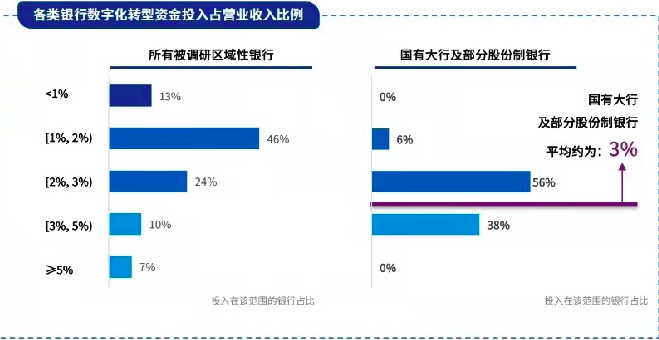

46家区域性银行数字化转型调查：意愿强烈进展缓慢，核心人才短缺

随着机构平台数字化转型加速，国内国有大行、股份制银行业务下沉的趋势越来越明显，在长沙银行信息技术部总经理程中看来，原本属于区域性银行的一些业务，大行也越来越多地参与到其中，给到中小行的空间越来越小，在强者恒强的情况下，中小行如何匹配发展速度、找到自身差异化竞争力，是非常重要的问题。在此过程中，通过云平台进行针对性、高效率的数字化转型显得尤为重要。
近日，腾讯云和毕马威联合18家银行发布《区域性银行数字化转型白皮书》，提出“深耕本地、错位竞争、巧借外力”是区域性银行数字化转型的三大突破口，“新连接、新智能、新基建、新敏捷”四大新数字化能力体系的构建是区域性银行数字化转型落地的基础。
在接受第一财经采访中，腾讯云副总裁、腾讯云金融行业负责人郭仁声透露称，在与不同的金融机构合作时发现不同银行机构——包括国有大行、股份制、区域性城商行、农商行等，他们思路、诉求、各自所面对的挑战等方面的差异化很大。
郭仁声表示，国有大行在人才储备、资金实力、场景丰富度等方面都更具备多年的积累，所服务的客群更偏头部客户，未来也会更往下沉，甚至可能会下沉到三四线城市进行金融普惠方面的工作，在技术方面也更偏重自身研发实力的提升。另外，更多城商行与农商行等区域性银行所面临的问题更有共性，如人才的竞争力问题等。
《白皮书》显示，调研的46家区域性银行中已有91%开展了数字化转型，81%已将数字化提升到全行核心战略或辅助战略的顶层设计高度。近年来，区域性银行对其预期资源投入也有着显著增长。90%的银行表示预计在未来3年内持续加大资金投入，平均年增长率约为21%。
尽管转型意愿强烈，但区域性银行的数字化建设进程总体较为缓慢，52%的银行仍处于起步阶段，转型难点主要集中在人才、数据、机制、对外合作四大挑战。
其中70%的被调研银行表示“数字化核心人才短缺”是制约其数字化转型的最主要因素；尽管48%的区域性银行已经完成了数据的归集和平台化建设，但仍存在内外部数据质量不一，数据难以统一对接，产业数据获取困难等问题。另有54%的银行反映因“缺乏合理的组织抓手和工作机制”，导致融合困难。也有部分银行反映，对外合作时虽然需求强烈，但效果达不到预期。
银行业数字化转型大军中，相较头部大行，区域性银行在多方面存在差异性。采访中，毕马威中国金融业战略咨询合伙人支宝才表示，大行在数字化转型方面的投入是区域性银行难以望其项背的，大行的科技特殊奖励基金甚至要比很多区域性银行全行的一年收入都要多。支宝才认为区域性银行可以在应用端、场景端、特别是技术端直接借鉴他行成熟经验，研究自身的特色与优势。
在企业数字化转型浪潮中，金融机构、头部银行成为云厂商们争夺的重点。市场研究机构IDC发布《中国金融云市场跟踪》报告称，金融云已经成为驱动行业增长的核心动力之一。2020年，中国金融云市场规模达到46.36亿美元，增速达到金融行业IT解决方案总体市场增速4倍以上，占比接近20％。
其中，阿里云宣布将在金融行业通过最新发布的金融级全栈技术方案，助力金融机构构建新一代云原生金融核心系统；华为云发布2021年金融系列产品上新计划，并联合八家伙伴发布一系列云原生2.0金融解决方案，共建全场景智慧金融。
贴身竞争的金融领域，腾讯云的机会在哪里？对此，郭仁声对第一财经记者表示，银行采用的数字化方案已经非常多了，他们自身会去评估技术方案是否达到了要求与设想，比如风控方面，很多银行不会只用一家风控方案厂商，而是会选择多家叠加，进而去评估哪一家的效果更好等，而这个过程中仍存有很多机会。
本文来源于网络，如有侵权请联系删除。
来源：今日头条
https://www.toutiao.com/a6972346662866027038/?is_new_connect=0&is_new_user=0&log_from=c04ae76ec0109_1623589329008